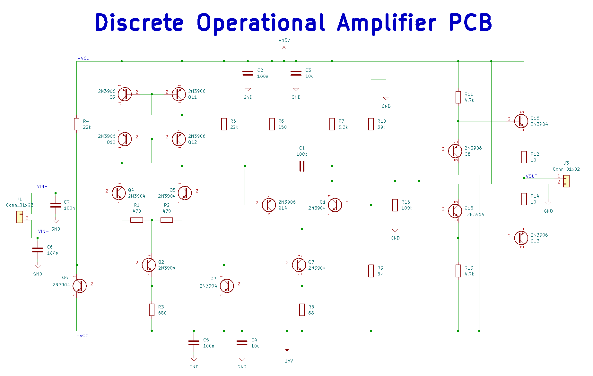

Discrete Operational Amplifier Design


Project Files & Simulation Assets
Objective
To reinforce the fundamentals of analog integrated circuit design by implementing a general-purpose discrete operational amplifier. This project translated theoretical concepts from Gray & Meyer's text into a physical, testable board-level system.
Implementation & Methodology
The circuit utilizes a classic topology featuring a differential input stage with an active current mirror load, followed by a high-gain common-emitter voltage amplification stage (VAS). Output buffering is managed via a complementary class-AB push-pull configuration.
- Simulated full AC, DC, and transient stability conditions using LTSpice.
- Analyzed critical operating parameters including phase margin, gain-bandwidth product (GBW), and slew rate profiles.
- Captured system schematics and systematically routed a 4-layer PCB utilizing KiCad.
- Implemented pole-splitting Miller compensation to enforce tight feedback stability margins across variable capacitive loading environments.
Challenges & Debugging
Initial evaluation iterations conducted on structural solderless breadboards exposed prominent high-frequency ground loop parasitics and transient ringing oscillations. Solderless environments proved highly susceptible to stray trace-to-trace capacitances, complicating stabilization metrics.
To mitigate layout-induced variables, the design was migrated to a dedicated printed tracking configuration, executing specialized isolated analog planes and wide decoupling trace geometry to minimize supply rail impedance bounds.
Results
Simulated tracking behaviors verified stable processing runs with an open-loop DC voltage gain benchmark of X dB alongside a phase margin threshold of Y degrees. Physical boards are ordered and awaiting structural bench validation tests on arrival.